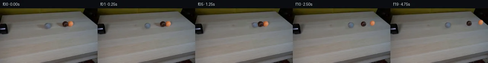

![首帧]()

Round 00
2026-11-04T21:20:11.838888+00:00像素候选变化代码 +180/−0inspection 更新
pixels 47a4aed730013d93 · code 279805e6a70bd309
查看本轮 generate.py 真实 diff
--- previous/generate.py +++ current/generate.py @@ -0,0 +1,180 @@ +from pathlib import Path + +import cv2 +import numpy as np +from PIL import Image, ImageDraw + +import artifact_io + + +ROOT = Path(__file__).resolve().parent +W, H = 256, 144 + + +def feathered_ellipse(size, rx, ry): + """Return a compact antialiased ellipse alpha mask.""" + yy, xx = np.mgrid[:size, :size].astype(np.float32) + c = (size - 1) / 2.0 + radius = np.sqrt(((xx - c) / rx) ** 2 + ((yy - c) / ry) ** 2) + # Fully opaque through most of the ball, then a 1.5-ish pixel feather. + alpha = np.clip((1.06 - radius) / 0.20, 0.0, 1.0) + alpha = alpha * alpha * (3.0 - 2.0 * alpha) + return alpha.astype(np.float32) + + +def extract_sprite(source, center, radius, size=25): + patch = cv2.getRectSubPix(source, (size, size), center).astype(np.float32) + alpha = feathered_ellipse(size, radius[0], radius[1]) + return patch, alpha + + +def add_shadow(image, center, radius, strength=0.17): + """Add the soft down-left contact shadow visible in the source.""" + mask = np.zeros((H, W), np.float32) + cx, cy = center + shadow_center = (int(round(cx - 4.0)), int(round(cy + radius[1] * 0.62))) + axes = (int(round(radius[0] * 1.35)), max(2, int(round(radius[1] * 0.46)))) + cv2.ellipse(mask, shadow_center, axes, -4, 0, 360, 1.0, -1, cv2.LINE_AA) + mask = cv2.GaussianBlur(mask, (0, 0), 2.0) + alpha = (mask * strength)[..., None] + image[:] = image * (1.0 - alpha) + np.array([35, 32, 28], np.float32) * alpha + + +def place_sprite(image, sprite, alpha, center): + """Composite a source sprite at a fractional-pixel center.""" + size = sprite.shape[0] + half = (size - 1) / 2.0 + left = int(np.floor(center[0] - half)) + top = int(np.floor(center[1] - half)) + frac_x = center[0] - (left + half) + frac_y = center[1] - (top + half) + matrix = np.float32([[1, 0, frac_x], [0, 1, frac_y]]) + shifted_rgb = cv2.warpAffine( + sprite, matrix, (size, size), flags=cv2.INTER_CUBIC, + borderMode=cv2.BORDER_REPLICATE + ) + shifted_alpha = cv2.warpAffine( + alpha, matrix, (size, size), flags=cv2.INTER_LINEAR, + borderMode=cv2.BORDER_CONSTANT, borderValue=0 + ) + + x0, y0 = max(0, left), max(0, top) + x1, y1 = min(W, left + size), min(H, top + size) + if x1 <= x0 or y1 <= y0: + return + sx0, sy0 = x0 - left, y0 - top + sx1, sy1 = sx0 + (x1 - x0), sy0 + (y1 - y0) + a = shifted_alpha[sy0:sy1, sx0:sx1, None] + image[y0:y1, x0:x1] = ( + shifted_rgb[sy0:sy1, sx0:sx1] * a + + image[y0:y1, x0:x1] * (1.0 - a) + ) + + +def reconstructed_background(source, remove_all): + """Remove source balls/shadows with texture-aware OpenCV inpainting.""" + mask = np.zeros((H, W), np.uint8) + # Gray ball and its broad soft shadow. + cv2.ellipse(mask, (120, 48), (19, 11), -4, 0, 360, 255, -1, cv2.LINE_AA) + if remove_all: + # Brown/orange pair plus their joined contact shadows. + cv2.ellipse(mask, (177, 43), (22, 12), -4, 0, 360, 255, -1, cv2.LINE_AA) + mask = cv2.dilate(mask, np.ones((3, 3), np.uint8), iterations=1) + clean = cv2.inpaint(source, mask, 4, cv2.INPAINT_TELEA) + # Keep the reconstruction restrained by blending only inside a softly + # expanded mask; untouched source pixels remain exact. + soft = cv2.GaussianBlur(mask.astype(np.float32) / 255.0, (0, 0), 1.3)[..., None] + return source.astype(np.float32) * (1.0 - soft) + clean.astype(np.float32) * soft … diff truncated; 93 more lines …